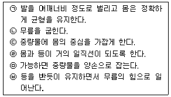
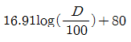
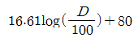
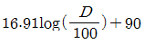
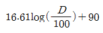
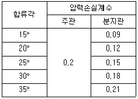
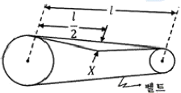
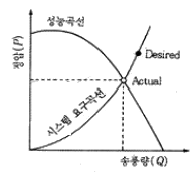

산업위생관리산업기사 (2016-08-21 기출문제)
1과목: 산업위생학 개론
1. 국소피로와 관련된 설명 중 틀린 것은?
- 적정 작업시간은 작업강도와 대수적으로 비례한다.
- 국소피로를 초래하기까지의 작업시간은 작업강도에 의해 결정된다.
- 대사산물의 근육 내 축적과 근육 내 에너지고갈이 국소피로를 유발한다.
- 작업강도란 근로자가 가지고 있는 최대의 힘에 대한 작업이 요구하는 힘을 말한다.
(정답률: 72%)

2. 정도관리의 목적은 오차를 찾아내고 그것을 제거 또는 예방하여 분석능력을 향상시키는데 있다. 여기서 오차(errer)에 대한 설명 중 틀린 것은?
- 오차란 참값과 측정치 간의 불일치 정도로 정의된다.
- 확률오차(random error)는 측정치의 정밀도로 정의된다.
- 확률오차(random error)는 측정치의 변이가 불규칙적이어서 변이값을 예측할 수 없다.
- 계통오차(systematic error)는 bias라고도 하며, 기준치와 측정치 간에 일정한 차이가 있음을 나타내며 대부분의 경우 원인을 찾아 낼 수 없다.
(정답률: 69%)
3. 25℃, 1기압 상태에서 톨루엔(분자량 92) 100ppm은 mg/m3인가?
- 92
- 188
- 376
- 411
(정답률: 72%)
4. 산업안전보건법 시행규칙에 의거 근로를 금지하여야 하는 질병자에 해당되지 않는 것은?
- 정신분열증, 마비성 치매에 걸린 사람
- 전염의 우려가 있는 질병에 걸린 사람
- 근골격계질환으로 감염의 우려가 있는 질병을 가진 사람
- 심장, 신장, 폐 등의 질환이 있는 사람으로서 근로에 의하여 병세가 악화될 우려가 있는 사람
(정답률: 78%)
5. 작업의 종류에 따른 영양관리 방안으로 가장 적절하지 않은 것은?
- 중작업자에게는 단백질을 공급한다.
- 저온작업자에게는 지방질을 공급한다.
- 근육작업자의 에너지 공급은 당질을 위주로 한다.
- 저온작업자에게는 식수와 식염을 우선 공급한다.
(정답률: 85%)
6. 미국산업위생학회(AIHA)에서 정한 산업위생의 정의를 맞게 설명한 것은?
- 모든 사람의 건강유지와 쾌적한 환경조성을 목표로 한다.
- 근로자의 생명연장 및 육체적, 정신적 능력을 증진시키기 위한 일련의 프로그램이다.
- 근로자의 육체적, 정신적 건강을 최고로 유지ㆍ증진시킬 수 있도록 작업조건을 설정하는 기술이다.
- 근로자에게 질병, 건강장애, 불쾌감 및 능률저하를 초래하는 작업환경 요인을 예측, 인식, 평가하고 관리하는 과학과 기술이다.
(정답률: 89%)
7. 다음의 중량물 들기 작업의 구분 동작을 순서대로 나열한 것은?

- ㉠→㉡→㉢→㉣→㉤→㉥
- ㉠→㉢→㉡→㉣→㉤→㉥
- ㉢→㉠→㉡→㉤→㉣→㉥
- ㉢→㉠→㉡→㉣→㉤→㉥
(정답률: 53%)
8. 산업피로를 측정할 떄 국소 근육 활동 피로를 측정하는 객관적인 방법은 무엇인가?
- EMG
- EEG
- ECG
- EOG
(정답률: 85%)
9. 작업환경측정 및 지정측정기관 평가 등에 관한 고시에서 농도를 mg/m3으로 표시할 수 없는 것은?
- 가스
- 분진
- 흄(fume)
- 석면
(정답률: 89%)
10. 고열과 관련하여 인체에 영향을 주는 환경적 요인들을 온열인자(thermal factors)라고 한다. 다음 중 온열인자들로 묶여진 것은?
- 기온, 습도, 기류, 기압
- 기온, 습도, 기류, 복사열
- 기온, 습도, 복사열, 전도
- 기온, 습도, 기류, 공기밀도
(정답률: 73%)
11. 도수율에 대한 설명으로 틀린 것은?
- 근로손실일수를 알아야 한다.
- 재해발생 건수를 알아야 한다.
- 연근로시간수를 계산해야 한다.
- 산업재해의 발생빈도를 나타내는 단위이다.
(정답률: 76%)
12. 미국산업위생학술원(AAIH)에서는 산업위생분야에 종사하는 사람들이 반드시 지켜야 할 윤리강령을 채택하였는데, 이에 해당하지 않은 것은?
- 전문가로서의 책임
- 근로자에 대한 책임
- 검사기관으로서의 책임
- 일반 대중에 대한 책임
(정답률: 86%)
13. 직업성 경견완 증후군 발생과 연관되는 작업으로 가장 거리가 먼 것은?
- 키펀치 작업
- 전화교환 작업
- 금전등록기의 계산 작업
- 전기톰에 의한 벌목 작업
(정답률: 77%)
14. 1940년대 일본에서 “이타이이타이병”으로 인하여 수많은 환자가 발생, 사망한 사례가 있엇는데, 이는 어느 물질에 의한 것인가?
- 납
- 크롬
- 수은
- 카드뮴
(정답률: 84%)
15. 어떤 작업에 있어 작업 시 소요된 열량이 3500kcal로 파악되었다. 기초대사량이 1100kcal이고, 안정 시 열량이 기초대사량의 1.2배인 경우 작업대사율(relative metabolic rate, RMR)은 약 얼마인가?
- 1.82
- 1.98
- 2.65
- 3.18
(정답률: 78%)
16. 교대근무제를 실시하려고 할 때 교대근무자의 건강관리 대책을 위한 조건 중 거리가 먼 것은?
- 수면ㆍ휴식 시설을 갖출 것
- 야근 작업 후의 휴식시간은 8시간으로 할 것
- 야근 작업 시 작업량이 과중하지 않도록 할 것
- 난방, 조명 등 환경조건을 적정하게 갖추도록 할 것
(정답률: 90%)
17. 산업 스트레스의 반응에 따른 행동적 결과와 가장 거리가 먼 것은?
- 흡연
- 불면증
- 행동의 격양
- 알코올 및 약물남용
(정답률: 65%)
18. 일반적으로 근로자가 휴식 중일 때의 산소 소비량(oxygen uptake)은 대략 어느 정도인가?
- 0.25L/min
- 0.75L/min
- 1.50L/min
- 2.00L/min
(정답률: 89%)
19. 석재공장, 주물공장 등에서 발생하는 유리규산이 주원인이 되는 진폐의 종류는?
- 면폐증
- 활석폐증
- 규폐증
- 석면폐증
(정답률: 87%)
20. 산업안전보건법상 최소 상시근로자 몇 인 이상의 사업장은 1인 이상의 보건관리자를 선임하여야 하는가?
- 10인 이상
- 50인 이상
- 100인 이상
- 300인 이상
(정답률: 89%)
2과목: 작업환경측정 및 평가
21. 다음 내용이 설명하는 법칙은?
- 라울트의 법칙
- 샤를의 법칙
- 게이-루삭의 법칙
- 보일의 법칙
(정답률: 79%)
22. 에틸렌클리콜이 20℃, 1기압에서 증기압이 0.⑤mmHg이면 포화농도(ppm)는?
- 약 44
- 약 66
- 약 88
- 약 102
(정답률: 66%)
23. 배경소음(Background Noise)을 가장 올바르게 설명한 것은?
- 관측하는 장소에 이어서의 종합된 소음을 말한다.
- 환경 소음 중 어느 특정 소음을 대상으로 할 경우 그 이외의 소음을 말한다.
- 레벨변화가 적고 거의 일정하다고 볼 수 있는 소름을 말한다.
- 소음원을 특정시킨 경우 그 음원에 의하여 발생한 소음을 말한다.
(정답률: 85%)
24. 측정소음도가 68dB(A)이고 배경소음이 50dB(A)이었다면, 이 때의 대상소음도는?
- 50dB(A)
- 59dB(A)
- 68dB(A)
- 74dB(A)
(정답률: 70%)
25. 다음 매체 중 흡착의 원리를 이용하여 시료를 채취하는 방법이 아닌 것은?
- 활성탄관
- 실리카겔관
- Molecular seive
- PVC여과지
(정답률: 51%)
26. 벤젠(C6H6)을 0.2L/min 유량으로 2시간 동안 채취하여 GC로 분석한 결과 10mg이었다. 공기 중 농도(ppm)는? (단, 25℃, 1기압 기준)
- 약 75
- 약 96
- 약 118
- 약 130
(정답률: 40%)
27. 허용농도에서 유해물질의 이름 앞에 C 표시가 있는데 이것의 의미는?
- 1일 8시간 평균농도
- 어떤 시점에서도 동수치를 넘어서는 안된다는 상한치
- 1일 15분 평균농도
- 피부로 흡수되어 정신적 영향을 줄 수 있는 농도
(정답률: 79%)
28. 고온작업장의 고온허용 기준인 습구흑구 온도지수(WBGT)의 옥내 허용기준 산출식은?
- WBGT(℃)=(0.7×흑구온도)+(0.3×자연습구온도)
- WBGT(℃)=(0.3×흑구온도)+(0.7×자연습구온도)
- WBGT(℃)=(0.7×흑구온도)+(0.3×건구온도)
- WBGT(℃)=(0.3×흑구온도)+(0.7×건구온도)
(정답률: 89%)
29. 분진에 대한 측정 방법으로 가장 거리가 먼 것은?(오류 신고가 접수된 문제입니다. 반드시 정답과 해설을 확인하시기 바랍니다.)
- 직독식(Digital)분진계법
- 중량 분석법
- 챠콜(charcoal)튜브(활성탄)법
- 임핀저(impinger)법
(정답률: 48%)
30. 한 작업장의 분진농도를 측정한 겨로가 2.3, 2.2, 2.5, 5.2, 3.3mg/m3이었다. 이 작업장 분진농도의 기하평균값(mg/m3)은?
- 약 3.43
- 약 3.34
- 약 3.13
- 약 2.93
(정답률: 63%)
31. 다음의 2차 표준기구 중 주로 실험실에서 사용하는 것은?
- 로타미터
- 습식테스트 미터
- 건식가스 미터
- 열선기류계
(정답률: 65%)
32. 시간가중평균 소음수준(dB(A))을 구하는 식으로 가장 적합한 것은? (단, D:누적소음노출량(%))




(정답률: 68%)
33. 작업환경측정에 사용되는 사이클론에 관한 내용으로 가장 거리가 먼 것은?
- 공기 중에 부유되어 있는 먼지 중에서 호흡성 입자상물질을 채취하고자 도안되었다.
- PVC 여과지가 있는 카세트 아래에 사이클론을 연결하고 펌프를 가동하여 시료를 채취한다.
- 사이클론과 여과지 사이에 설치된 단계적 분리관으로 인자의 질량크기분포를 얻을 수 있다.
- 사이클론은 사용할 때마다 그 내부를 청소하고 검사해야 한다.
(정답률: 64%)
34. MCE 막 여과지에 관한 설명으로 틀린 것은?
- MCE 막 여과지의 원료인 셀룰로스는 수분을 흡수하지 않기 때문에 중량분석에 잘 적용된다.
- MCE 막 여과지는 산에 쉽게 용해된다.
- 입자상 물질 중의 금속을 채취하여 원자흡광법으로 분석하는데 적정하다.
- 시료가 여과지의 표면 또는 표면 가까운 곳에 침착되므로 석면 등 현미경분석을 위한 시료 채취에 이용된다.
(정답률: 73%)
35. 유해요인별 측정단위가 잘못 연결된 것은?
- 입자상 물질 : mg/m3
- 소음 : dB(A)
- 석면 : μg/cc
- 가스상 물질 : ppm
(정답률: 92%)
36. 비누거품미터를 이용하여 시료채취펌프의 유량을 보정하였다. 뷰렛의 용량이 1000mL이고 비누거품의 통과시간은 28초일 때 유량(L/min)은 약 얼마인가?
- 2.14
- 2.34
- 2.54
- 2.74
(정답률: 65%)
37. 소음의 예방관리 대책으로 음의 방향시간(Reverberation time method)을 이용하는 방법으로 총 흡입량은 120dB이며, 작업공간의 부피는 80m3일 때 이 작업공간에서 음의 반향 시간(T)은 약 얼마인가?
- 0.24초
- 0.67초
- 1.5초
- 0.1초
(정답률: 25%)
38. 검지관 사용 시 단점이라 볼 수 없는 것은?
- 밀페공간에서 산소부족 또는 폭발성 가스 측정에는 측정자 안전이 문제된다.
- 민감도 및 특이도가 낮다.
- 각 오염물질에 맞는 검지관을 선정해야 하는 불편이 있다.
- 색변화가 선명하지 않아 주관적으로 읽을 수 있어 판독자에 따라 변이가 심하다.
(정답률: 70%)
39. 작업장 내 유해물질 측정에 대한 기초적인 이론을 설명한 것으로 틀린 것은?
- 작업장 내 유해화학 물질의 농도는 일반적으로 25℃, 760mmHg의 조건하에서 기준농도로써 나타낸다.
- 가스 또는 증기의 ppm과 mg/m3간의 상호농도 변환은 mg/m3=ppm×(24.46/M) (M:분자량)으로 계산한다.
- 가스란 상온 상압 하에서 기체상으로 존재하는 것을 말하며 증기란 상온 상압하에서 액체 또는 고체인 물질이 증기압에 따라 휘발 또는 승화하여 기체로 되어 있는 것을 말한다.
- 유해물질의 측정에는 공기 중에 존재하는 유해 물질의 농도를 그대로 측정하는 방법과 공기로부터 분리 농축하는 방법이 있다.
(정답률: 61%)
40. 소음측정을 위해 사용되는 지시소음계(Sound Level Meter)는 산업장에서의 소음노출의 정도를 판단하기 위하여 사용되는 기본계기이다. 지시소음계에 관한 설명으로 틀린 것은?
- 지시소음계는 마이크로폰, 증폭기 및 지시계 등으로 구성되어 있으며 소리의 세기 또는 에너지량을 읍압수준으로 표시한다.
- 음량조절장치는 A특성, B특성, C특성을 나타내는 3가지의 주파수 보정회로로 되어 있다.
- 보정회로를 붙인 이유는 주파수별로 음압수준에 대한 귀의 청각반응이 다르기 때문에 이를 보정하기 위함이다.
- 대부분의 소음 에너지가 1000Hz 이하일 때에는 A, B, C의 각 특성치의 차이는 비슷하다.
(정답률: 78%)
3과목: 작업환경관리
41. 호흡용 보호구에 관한 설명으로 틀린 것은?
- 오염물질을 정화하는 방법에 따라 공기 정화식과 공기 공급식으로 구분된다.
- 흡기저항이 큰 호흡용 보호구는 분진 제거율이 높아 안전성이 확보된다.
- 분진제거용 필터는 일반적으로 압축된 섬유상 물질을 사용한다.
- 산소농도가 정상적이고 먼지만 존재하는 작업장에서는 방진마스크를 사용한다.
(정답률: 64%)
42. 방독마스크의 흡수제의 재질로 적당하지 않은 것은?
- fiber glass
- silicagel
- activated carbon
- sodalime
(정답률: 73%)
43. 아크 용접 작업을 하는 용접작업자의 근로자 건강보호를 위한 작업환경관리 방안으로 가장 거리가 먼 것은?
- 용접 흄 노출농도가 적절한지 살펴보고 특히 망간 등 중금속의 노출정도를 파악하는 것이 중요하다.
- 자외선의 노출여부 및 노출강도를 파악하고 적절한 보안경 착용여부를 점검한다.
- 용접작업 주변에 TCE세척작업 등 TCE의 노출이 있는지 확인한다.
- 전기용접기로 발생하는 전자파에 노출될 우려가 있으므로 전자파 노출정도를 측정하고 이를 관리한다.
(정답률: 55%)
44. 피부에 직접 유해물질이 닿지 않도록 피부 보호용 크림이 사용되는데 사용물질에 따라 분류된다. 다음 피부보호제 중 이에 해당되지 않은 것은?
- 지용성 물질에 대한 피부보호제
- 수용성 피부보호제
- 광과민성 물질에 대한 비부보호제
- 수막형성형 피부보호제
(정답률: 46%)
45. 산소결핍에 의해 가장 민감한 영향을 받는 신체부위는?
- 간장
- 대뇌
- 심장
- 폐
(정답률: 89%)
46. 소음원으로부터의 거리와 읍압수준은 역비례한다. 만일 거리가 2배 증가하면 읍압수준은 약 몇 dB감소하는가? (단, 점음원 기준)
- 2dB
- 3dB
- 6dB
- 9dB
(정답률: 73%)
47. 상대적 독성(수치는 독성의 크기)이 2+2→4와 같은 결과를 나타내는 화학적인 상호작용은?
- 상승작용
- 상가작용
- 길항작용
- 동일작용
(정답률: 86%)
48. 반복하여 쪼일 경우 피부가 건조해지고 갈색을 띠게 하며 주름살이 많이 생기도록 작용하며, 눈의 각막과 결막에 흡수되어 안질환을 일크기기도 하는 것은?
- 자외선
- 적외선
- 가시광선
- 레이저(Laser)
(정답률: 83%)
49. 입자상먼지는 크기에 따라 채취효율이 달라진다. 방진마스크의 여과효율을 검정할때는 채취효율이 가장 낮은 크기의 먼지를 사용한다. 방진마스크의 여과효율을 검정할 때 국제적으로 사용하는 먼지의 크기(㎛)는?
- 0.1
- 0.3
- 0.5
- 1.0
(정답률: 74%)
50. 소음 작업장에서 소음 예방을 위한 전파경로 대책으로 가장 거리가 먼 것은?
- 공장 건물 내벽의 흡음처리
- 지향성 변환
- 소음기(消音器) 설치
- 방음벽 설치
(정답률: 57%)
51. 국소진동의 경우에 주로 문제가 되는 주파수 범위로 가장 알맞은 것은?
- 1~8Hz
- 8~1500Hz
- 1500~4000Hz
- 4000~6000Hz
(정답률: 74%)
52. 유해화학물질이 발산되는 사업장에서 근로자에게 가장 많이 침투되는 인체 침입 경로는?
- 호흡기
- 소화기
- 피부
- 점막
(정답률: 84%)
53. 방진마스크의 선정기준으로 가장 거리가 먼 것은?
- 시야가 넓을 것
- 무게가 가벼울 것
- 흡기 저항이 클것
- 포집효율이 높을 것
(정답률: 74%)
54. 밀폐공간에 근로자를 종사하도록 할 때, 사업주는 건강장해 예방을 위해 조치를 취해야 한다. 이 때의 조치 사항으로 관계가 없는 것은?
- 작업시작 전 적정한 공기 상태여부의 확인을 위한 측정ㆍ평가
- 응급조치 등 안전보건 교육 및 훈련
- 공기 호흡기 또는 송기마스크 등의 착용 및 관리
- 청력보호구의 착용 및 관리
(정답률: 87%)
55. 분진발생공정에 대한 대책의 일환으로 국소배기장치를 들 수 있다. 연마작업, 블라스트 작업과 같이 대단히 빠른 기동이 있는 작업장소에서 분진이 초고속으로 비산하는 경우 제어 품속의 범위는?
- 0.25~0.5m/s
- 0.5~1.0m/s
- 1.0~2.5m/s
- 2.5~10.0m/s
(정답률: 51%)
56. 전리방사선 작업장에서 피폭량을 적게 하는 방법과 관계가 없는 것은?
- 노출시간
- 거리
- 차폐
- 물질대치
(정답률: 65%)
57. 보호구 밖의 농도가 300ppm이고 보호구 안의 농도가 12ppm이었을 때 보호계수(Protection factor, PF)값은?
- 200
- 100
- 50
- 25
(정답률: 82%)
58. 촉광에 대한 설명으로 틀린 것은?
- 단위는 룩수(Lux)를 사용한다.
- 지름이 1인치되는 촛불이 수평 방향으로 비칠때 대략 1촉광의 빛을 낸다.
- 빛의 광도를 나타내는 단위로 국제촉광을 사용한다.
- 1촉광=4π 루멘의 관계가 성립한다.
(정답률: 53%)
59. 공기 중 오염물질을 분류함에 있어 상온, 상압에서 액체 또는 고체(임계온도가 25℃이상) 물질이 증기압에 따라 휘발 또는 승화하여 기체상태로 된 것은?
- 흄
- 증기
- 미스트
- 더스트
(정답률: 79%)
60. 산소결핍 가능 작업장에 대한 보건 및 작업관리대책으로 가장 거리가 먼 것은?
- 작업자의 건강진단
- 환기
- 작업전 산소농도 측정
- 보호구 착용(공기호흡기, 호스마스크)
(정답률: 73%)
4과목: 산업환기
61. push-pull형 환기장치에 관한 설명으로 틀린 것은?
- 도금조, 자동차 도장 공정에서 이용할 수 있다.
- 일반적인 국소배기장치 후드보다 동력비가 가장 많이 든다.
- 한 쪽에서는 공기를 불어 주고(push)한쪽에서는 공기를 흡입(pull)하는 장치이다.
- 공정상 포착거리가 길어서 단지 공기를 제어하는 일반적인 후드로는 효과가 낮을 때 이용하는 장치이다.
(정답률: 72%)
62. 국소배기장치에 대한 압력측정용 장비가 아닌 것은?
- 피토관
- U자 마노미터
- smoke tube
- 경사 마노미터
(정답률: 58%)
63. 총압력손실 계산방법 중 정압조절평형법의 장점이 아닌 것은?
- 향후 변경이나 확장에 대해 유연성이 크다.
- 설계가 확실할 때는 가장 효율적인 시설이 된다.
- 설계 시 잘못 설계된 분지관을 쉽게 발견할 수 있다.
- 예기치 않은 침식 및 부식이나 퇴적문제가 일어나지 않는다.
(정답률: 52%)
64. 사이클론의 집질율을 높이는 방법으로 분진박스나 호퍼부에서 처리가스의 일부를 흡인하여 사이클론 내의 난류 현상을 억제시킴으로써 집진된 먼지의 비산을 방지시키는 방법은 어떤 효과를 이용하는 것인가?
- 원심력 효과
- 중력침강 효과
- 블로우다운 효과
- 멀티사이클론 효과
(정답률: 76%)
65. 유기용제 작업장에 후드를 설치하고자 한다. 이 때 가장 효율이 좋은 후드는?
- 외부시 상방형
- 외부식 하방형
- 외부식 측방형
- 포위식 부스형
(정답률: 78%)
66. 기체의 비중은 공기무게에 대한 같은 부피의 기체 무게비이다. 이산화탄소의 기체비중은 약 얼마인가? (단, 1몰의 공기질량은 28.97g으로 한다.)
- 1.52
- 1.62
- 1.72
- 1.82
(정답률: 38%)
67. 관의 내경이 200mm인 직관에 55m3/min의 공기를 송풍할 때 관내 기류의 평균 유속(m/s)은 약 얼마인가?
- 19.5
- 26.5
- 29.2
- 47.5
(정답률: 59%)
68. 760mmHg, 20℃의 표준공기를 대상으로 했을 때 동점성 계수 1.5×10-5m2/sec이고, 풍속의 4m/sec, 내경이 507mm인 경우 관내 기체의 Reynold수는 약 얼마인가?
- 1.4×105
- 2.7×106
- 3.7×105
- 3.7×106
(정답률: 43%)
69. 일반적으로 덕트 내의 반송속도를 가장 크게 해야 하는 물질은?
- 증기
- 목재 분진
- 고무분
- 주조 분진
(정답률: 50%)
70. A작업장에서는 1시간에 0.5L의 매틸에틸케톤(MEK)이 증발되고 있다. MEK의 TLV가 100ppm 이라면 이 작업장 전체를 환기시키기 위한 필요환기량(m3/min)은 약 얼마인가? (단, 주위온도는 25℃, 1기압 상태이며, MEK의 분자량은 72.1, 비중은 0.8⑤, 안전계수는 3이다.)
- 17.06
- 34.12
- 68.25
- 83.56
(정답률: 49%)
71. 온도가 150℃, 압력 700mmHg 일 때 200m3인 기체는 산업호나기의 표준상태에서 약 얼마의 체적을 갖는가?
- 118.0m3
- 128.0m3
- 138.0m3
- 148.0m3
(정답률: 58%)
72. 전기집진장치의 장점이 아닌 것은?
- 가스상 오염물질의 처리가 용이하다.
- 고온의 분진함유공기를 처리할 수 있다.
- 넓은 범위의 입경과 분진농도에 집진효울이 높다.
- 압력손실이 낮아 송풍기의 운전비용이 저렵하다.
(정답률: 49%)
73. 국소배기장치와 전체환기시설을 비교한 것으로 틀린 것은?
- 국소배기장치는 오염물질을 발생원에서 수비게 포집하여 제거할 수 있다.
- 국소배기장치는 크기가 큰 침강성 먼지도 제거할 수 있으므로 청소비와 청소인력이 절약 된다.
- 국소배기장치는 오염물질이 소량의 공기에 고농도로 포함되어 있으므로 필요송풍량을 줄일 수 있다.
- 국소배기장치에서 배출되는 공기량이 많고, 동시에 보충되어야 할 급기량도 많으므로 전체환기보다 경제적이지 못하다.
(정답률: 61%)
74. 주관에 15°로 분지관이 연결되어 있고 주관과 분지관의 속도앞이 모두 15mmH2O일 때 주관과 분지관의 합류에 의한 압력손실은 몇 mmH2O인가? (단, 원형 합류관의 압력손실계수는 다음 표를 참고한다.)

- 3.75
- 4.35
- 6.25
- 8.75
(정답률: 47%)
75. 작업장의 크기가 세로 20m, 가로 10m, 높이 6m 이고, 필요환기량이 60m3/min일 때 1시간당 공기교환횟수는 몇 회인가?
- 1회
- 2회
- 3회
- 4회
(정답률: 65%)
76. 송풍기 벨트의 점검 사항으로 늘어짐 한계 표시를 맞게 한 것은?

- 0.01l ＜ X ＜ 0.02l
- 0.04l ＜ X ＜ 0.⑤l
- 0.07l ＜ X ＜ 0.08l
- 0.10l ＜ X ＜ 0.12l
(정답률: 55%)
77. 유입계수가 0.8이고 속도압이 10mmH2O 일 떄 후드의 유입손실은 약 얼마인가?
- 4.2mmH2O
- 5.6mmH2O
- 6.2mmH2O
- 7.8mmH2O
(정답률: 57%)
78. 다음 그림의 송풍기 성능곡선에 대한 설명으로 맞는 것은?

- 너무 큰 송풍기를 선정하고 시스템 압력손실도 과대평가된 경우이다.
- 시스템 곡선의 예측은 적절하나 성능이 약한 송풍기를 선정하여 송풍량이 적게 나오는 경우이다.
- 설계단계에서 예측했던 시스템 요구곡선이 잘 맞고, 송풍기의 선정도 적절하여 원했던 송풍량이 나오는 경우이다.
- 송풍기의 선정은 적절하나 시스템의 압력손실 예측이 과대평가되어 실제로는 압력손실이 작게 걸려 송풍량이 예상보다 많이 나오는 경우이다.
(정답률: 55%)
79. 국소배기장치의 필요송풍량을 소화하기 위해 취해진 조치로 잘못된 것은?
- 오염물질 발생원을 가능한 밀폐한다.
- 플랜지 등을 설치하여 후드 유입 기류를 조절한다.
- 주위 방해기류를 최소화하여 후드의 기류형성이 쉽도록 한다.
- 작업에 방해가 되지 않도록 후드와 오염물질 발생원 간의 거리를 멀게 한다.
(정답률: 80%)
80. 제어속도에 관한 설명으로 틀린 것은?
- 포집속도라고도 한다.
- 유해물질이 후드로 유입되는 최대 속도를 말한다.
- 같은 유해인자라도 후드의 모양과 방향에 따라 달라진다.
- 제어속도는 유해물질의 발생조건과 공기의 난기류 속도 등에 의해 결정된다.
(정답률: 69%)
작업강도란 근로자가 가지고 있는 최대의 힘에 대한 작업이 요구하는 힘을 말한다. 국소피로를 초래하기까지의 작업시간은 작업강도에 의해 결정된다. 대사산물의 근육 내 축적과 근육 내 에너지고갈이 국소피로를 유발한다. 이 모든 설명이 맞는 것이다.